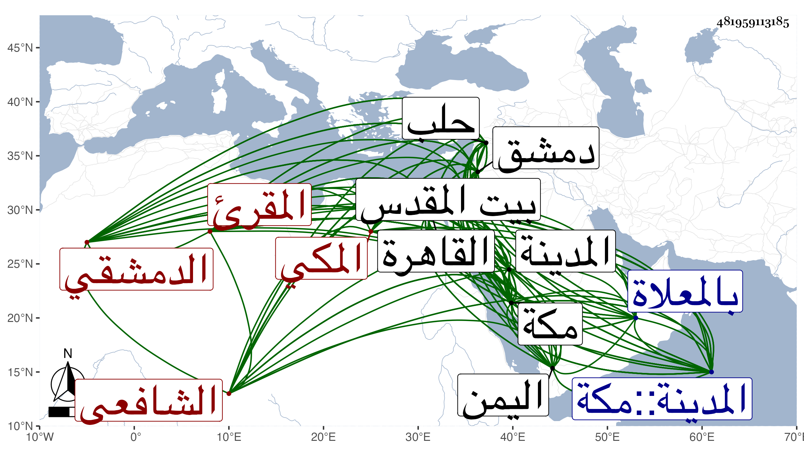

0902Sakhawi.DawLamic.ITO20230111-ara1.EIS1600.481959113185
Biography ID: 481959113185
184
عبد الرحمن بن أحمد بن محمد بن محمد بن يوسف بن علي ابن عياش الزين أبو الفرج وأبو بكر بن الشهاب أبي العباس الدمشقي الأصل المكي الشافعي المقرئ الماضي أبوه ويعرف بابن عياش بتحتانية ومعجمة . ولد في ربيع الأول سنة اثنتين وسبعين وسبعمائة بدمشق ونشأ بها فسمع حسبما كان يخبر على العمادين ابن كثير وابن السراج والمحيوي الرحبي والزين بن رجب الحنبلي والشمس بن سند ورسلان الذهبي في آخرين وتلا على أبيه للسبع إفرادا ثم جمعا للعشر بما تضمنه كتاب الورقات المثمرة في تتمة قراءات الأئمة العشرة لوالده وشوهه خط والده بذلك ولكنه كان يخبر أنه تلا تجويدا على الأمين بن السلار من أول القرآن إلى سورة الصف ، وسمع عليه الشاطبية وأنه قرأ أيضا على الشرف أبي المعالي محمود بن شرف شاه الطوسي خادم الخدام بالسميساطية بدمشق والزين أبي حفص عمر بن الشمس ابن اللبان الدمشقي وعلى فيروز التبريزي بجامع منكلي بغا بحلب وانه ارتحل إلى القاهرة في سنة اثنتين وتسعين فتلا علي العسقلاني للعشر وأذن له في الاقراء ، وعرض عليه الشاطبية والرائية وأثبت ابن الجزري في ترجمة العسقلاني من طبقاته اسمه فيمن قرأ عليه فساوي حينئذ والده في الاسناد والحاصل أنه قرأ القراآت بدمشق وحلب والقاهرة وتفقه بأبيه وسمع دروس البلقيني وغيره وأخذ النحو عن أبيه وعطاء الله الدر والي الهندي ، وحج مع أبيه في سنة سبع وثمانين وزار بيت المقدس ثم انقطع بمكة من سنة تسع وثمانمائة أو التي بعدها وارتحل في أثناء ذلك إلى اليمن لزيارة أبيه فانه كان انقطع بها لطلب الحلال وكذا سافر منها إلى المدينة النبوية فجاور فيها غير مرة وتصدى في الحرمين لنشر القراءات ليلا ونهارا فانتفع به خلق من أهلهما والقادمين عليهما وصار شيخ الاقراء هناك بلا مدافع ولذا وصفه شيخنا في ترجمة والده من إنبائه بقوله مقرئ الحرم ، وكان يدرس أيضا في ألفية ابن مالك ونظم غاية المطلوب في قراءة خلف وأبي جعفر ويعقوب أخذها الناس عنه وأولها :
| حمدت إله الخلق حمدا مكملا | وصليت يا ربي على أشرف الملا |
| وبعد فخذ نظم الثلاثة سالكا | طريقة إرشاد لتهدي من تلا |
وكذا له نظم غير ذلك أثبت منه في ترجمته من معجمي أشياء وانقطع بمنزله في مكة من أثناء سنة احدى وخمسين لعجزه عن الحركة غير منفك مع ذلك عن الاقراء لمن يقصده حتى مات فجأة في ضحى يوم الثلاثاء حادي عشري صفر سنة ثلاث وخمسين بمكة وصلى عليه بعد صلاة العصر عند باب الكعبة ودفن بالمعلاة بالقرب من الشيخ علي بن أبي بكر الزيلعي رحمهما الله وإيانا وهو في ذيل ابن فهد مطول وقد وصفه ابن الجزري فيما قرأته بخطه بالشيخ الامام العلامة شيخ الاقراء وأوحد القراء والمشار إليه في وقته من بين أهل العصر بالتجويد والاداء والمنفرد في الحرمين الشريفين بالتصدر ونفع المسلمين زين الدين أبي محمد وقال انه سأله ذكر ما يعلم من لقيه للشمس العسقلاني فكتب أنه كان بالقاهرة في حياة العسقلاني قال وكان يقرأ جمعا بالقراءات علي ويخبرني أنه يقرأ علي العسقلاني المذكور جمعا انتهى . وكان هذا مستند ابن الجزري في جزمه بذلك في الطبقات على أني رأيت من حكى عن كل من ابن الجزري وشيخنا رضوان إنكار ذلك ورميه فيه بالكذب والمعتمد ما قدمته ، وهو في عقود المقريزي وانه مقرئ الحجاز ممن نفع الله به الناس وأغناه عن التطلع لما في أيديهم وصحبه أيام مجاورته بمكة سنة أربع وثلاثين واستفاد منه ترجمة أبيه .
